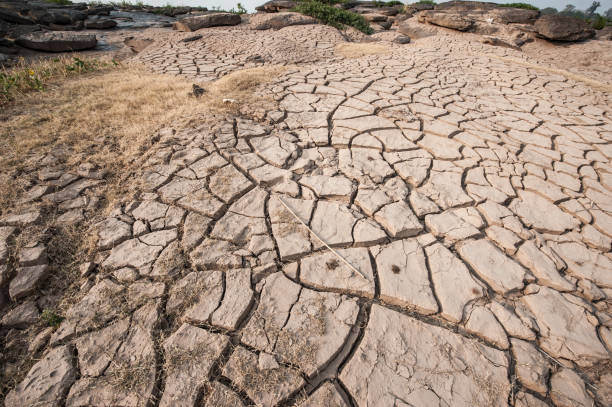
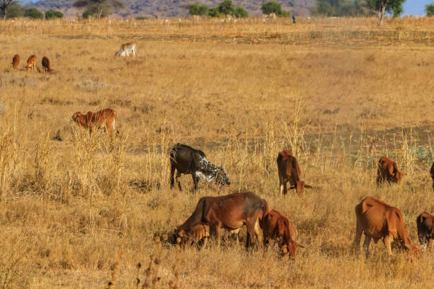
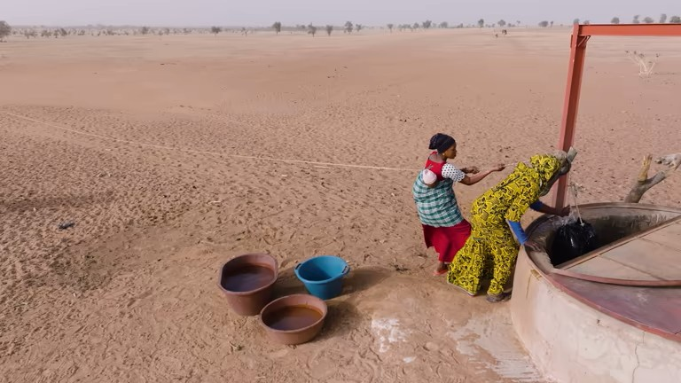
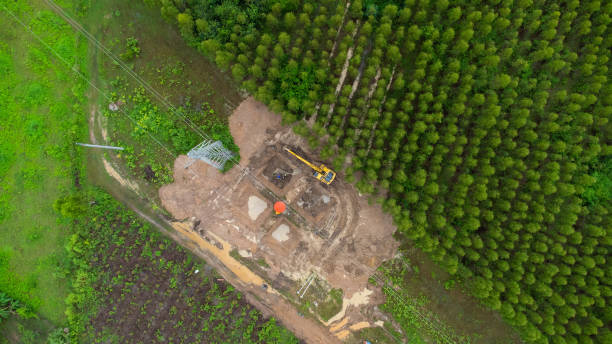

Understanding Desertification
Desertification is the process by which fertile land becomes desert, typically as a result of drought, deforestation, or inappropriate agriculture. It's a critical issue under UN Sustainable Development Goal 15.
According to the UN, over 24 billion tons of fertile soil are lost annually to desertification, affecting more than 1.5 billion people globally.

🔥 A Growing Threat
Desertification doesn't mean the natural expansion of existing deserts. Rather, it refers to the relentless degradation of dryland ecosystems caused fundamentally by human activities and climatic variations. If left unchecked, it can lead directly to mass poverty, food insecurity, and forced mass migrations.
Main Causes of Desertification

1. Climate Change
Rising temperatures and changing rainfall patterns exacerbate drought conditions, making land more susceptible to desertification. The frequency and intensity of droughts have increased by 29% since 2000.
2. Deforestation
Removal of trees and vegetation exposes soil to wind and water erosion. About 10 million hectares of forest are lost annually, contributing significantly to desertification.
3. Overgrazing
Excessive livestock grazing removes vegetation cover, leaving soil exposed to erosion. In some regions, livestock density exceeds the land's carrying capacity by 50-500%.
4. Poor Irrigation Practices
Improper water management leads to soil salinization, rendering land unproductive. Approximately 20% of irrigated land worldwide is affected by salinization.
Effects of Desertification

1. Food Insecurity
Desertification reduces agricultural productivity, threatening food supplies for 1 billion people in over 100 countries.
2. Biodiversity Loss
Habitat destruction leads to species extinction. The current extinction rate is 100-1000 times higher than natural background rates.
3. Climate Change Acceleration
Degraded lands release stored carbon, contributing to greenhouse gas emissions. Desertification is responsible for about 3.6 billion tons of CO2 emissions annually.
4. Human Migration
By 2050, desertification may displace up to 700 million people, creating climate refugees and increasing social tensions.
Solutions to Combat Desertification

1. Sustainable Land Management
Techniques like crop rotation, agroforestry, and conservation agriculture can restore soil health. These methods have shown to increase yields by 79% while conserving resources.
2. Reforestation Efforts
Large-scale tree planting initiatives like Africa's Great Green Wall aim to restore 100 million hectares of degraded land by 2030.
3. Water Conservation
Implementing drip irrigation and rainwater harvesting can reduce water waste by up to 60% compared to traditional methods.
4. Community Education
Training local communities in sustainable practices ensures long-term success. Projects with community involvement have 70% higher success rates.
How You Can Help
1. Support Sustainable Products
Choose products certified by organizations like the Rainforest Alliance or Fairtrade that promote sustainable land use.
2. Reduce Meat Consumption
Livestock farming is a major driver of deforestation. Reducing meat consumption can significantly lower your environmental footprint.
3. Donate to Restoration Projects
Organizations like the UNCCD and Trees for the Future work directly on desertification issues.
4. Advocate for Policy Change
Support policies that protect forests and promote sustainable agriculture in your community and country.
5. Plant Native Vegetation
Even small-scale planting in your local area can contribute to soil conservation and biodiversity.